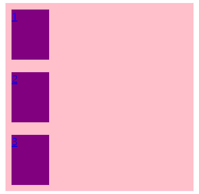
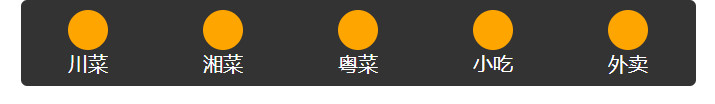

首先提问两个问题，一般童鞋都会让子元素水平居中，那么怎么让子元素垂直居中呢？怎么在不设置padding和margin值且不浮动的情况下，对页面元素进行自由布局呢？这个时候我们的flex布局就该大展身手了。
1.flex 是 flexible Box 的缩写，意为"弹性布局"（也叫伸缩布局 、伸缩盒布局），用来为盒状模型提供最大的灵活性，任何一个容器都可以指定为 flex 布局。
2.当我们为父盒子设为 flex 布局以后，子元素的 float、clear 和 vertical-align 属性将失效。为什么呢？因为flex布局可以让子元素一行显示，不需要浮动，所以就不需要清除浮动。
3.采用 Flex 布局的元素，称为 Flex 容器（flex container），简称"容器"。它的所有子元素自动成为容器成员，称为 Flex 项目（flex item），简称"项目"。
4.实现方法：简单说就是通过给父盒子添加display:flex属性，子盒子添加flex: 数字（或百分数）属性，及其他属性来控制子盒子的位置和排列方式。
简单吧？不要急，下面说一说父盒子和子盒子各属性及实现的效果。
（为了不显得啰嗦，就简述属性的作用，后面用案例展示，具体属性值参考api）
1.flex-direction：设置主轴的方向 。（默认主轴为x轴,属性column表示主轴为y轴）
2.justify-content：设置主轴上的子元素排列方式。（常用属性：center、space-around、space-between）
3.
设置主轴为y轴且子元素平分父元素
<!DOCTYPE html>
<html lang="en">
<head>
<meta charset="UTF-8">
<meta name="viewport" content="width=device-width, initial-scale=1.0, user-scalable=no,maximum-scale=1.0,minimum-scale=1.0">
<meta http-equiv="X-UA-Compatible" content="ie=edge">
<title>设置主轴为y轴且子元素平分父元素</title>
<style>
.father{
display: flex; /* 给父盒子设为flex布局 */
flex-direction: column; /* 设置主轴方向为y轴，即子盒子沿y轴排列 */
width: 300px;
height: 300px;
background-color: pink;
margin:0 auto;
}
.son{
flex: 1; /* 因为三个子盒子每个占父盒子的1份，所以平分父盒子剩余空间 */
width: 60px; /* 当主轴为y轴时给宽不给高，因为高度是占父盒子的份数 */
margin: 10px;
background-color: purple;
}
</style>
</head>
<body>
<div class="father">
<!-- 父盒子采用flex布局后，即使子盒子是行内元素也可直接设置宽高 -->
<a href="#" class="son">1</a>
<a href="#" class="son">2</a>
<a href="#" class="son">3</a>
</div>
</body>
</html>效果图：

2.案例二：伸缩盒中导航栏实例
代码如下：
<!DOCTYPE html>
<html lang="en">
<head>
<meta charset="UTF-8">
<meta name="viewport" content="width=device-width, initial-scale=1.0, user-scalable=no,maximum-scale=1.0,minimum-scale=1.0">
<meta http-equiv="X-UA-Compatible" content="ie=edge">
<title>伸缩盒中导航栏实例</title>
<style>
*{
margin: 0;
padding: 0;
}
nav{
width: 540px;
background-color: #333;
margin: 0 auto;
border-radius: 5px;
}
ul{
display: flex; /* 给ul添加flex属性，作弹性容器*/
list-style: none;
}
nav li{
flex: 1; /* 每个li平分ul宽度 */
padding: 8px 0;
}
nav a{
display: flex; /* 给a添加flex属性，作弹性容器 */
flex-direction: column; /* 主轴为y，设置a中子元素span沿y轴排列 */
align-items: center; /* 侧轴为x，设置a中子元素span沿侧轴x居中 */
text-decoration: none;
color: #fff;
}
.pic{
width: 32px;
height: 32px;
border-radius: 16px;
background-color: orange;
}
</style>
</head>
<body>
<nav>
<ul>
<li>
<a href="#">
<span class="pic"></span>
<span>川菜</span>
</a>
</li>
<li>
<a href="#">
<span class="pic"></span>
<span>湘菜</span>
</a>
</li>
<li>
<a href="#">
<span class="pic"></span>
<span>粤菜</span>
</a>
</li>
<li>
<a href="#">
<span class="pic"></span>
<span>小吃</span>
</a>
</li>
<li>
<a href="#">
<span class="pic"></span>
<span>外卖</span>
</a>
</li>
</ul>
</nav>
</body>
</html>效果图：

尝试过flex的用法后，我们来总结一下flex与传统布局的对比。
flex布局：操作方便，布局极其简单（省略了大量的边距测量工作，且可以垂直居中等），移动端使用比较广泛。但是由于是css3的内容，所以pc端浏览器支持情况比较差。IE11或更低版本不支持flex或仅支持部分。
传统布局：兼容性好，但相比之下布局略显繁琐，有一定局限性，不能再移动端很好的布局。
所以，在实际开发中，如果是pc端页面布局，还是采用传统方式，如果是移动端或者是不考虑兼容的pc则采用flex。